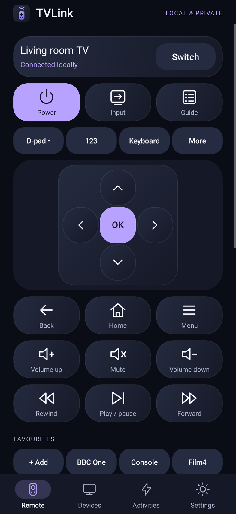
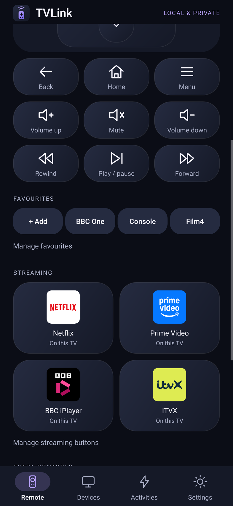
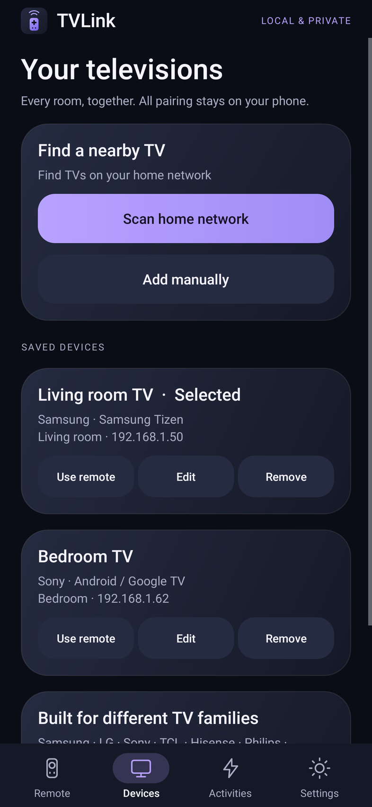
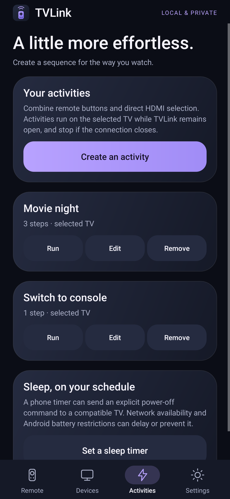
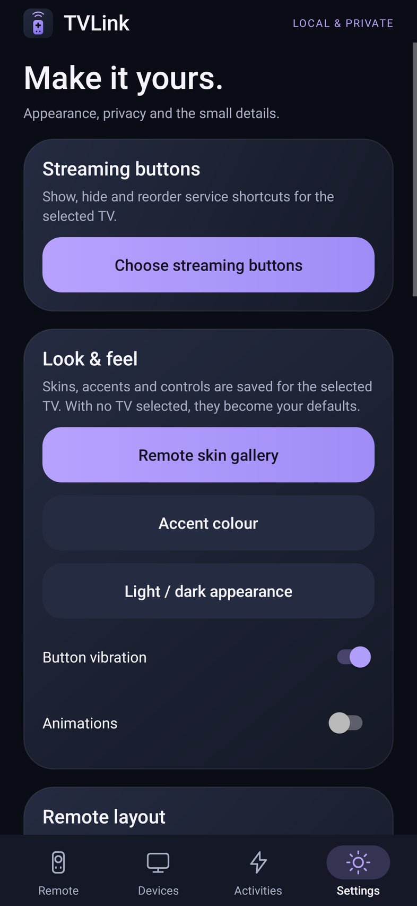
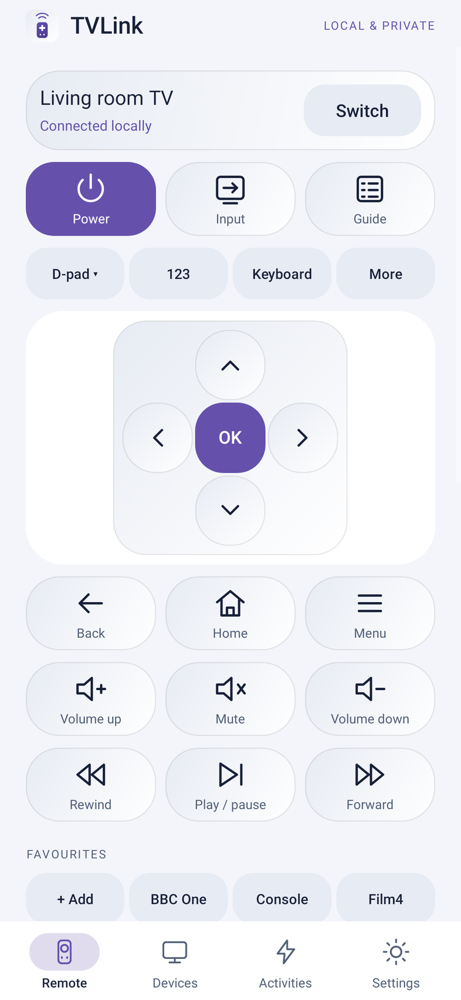
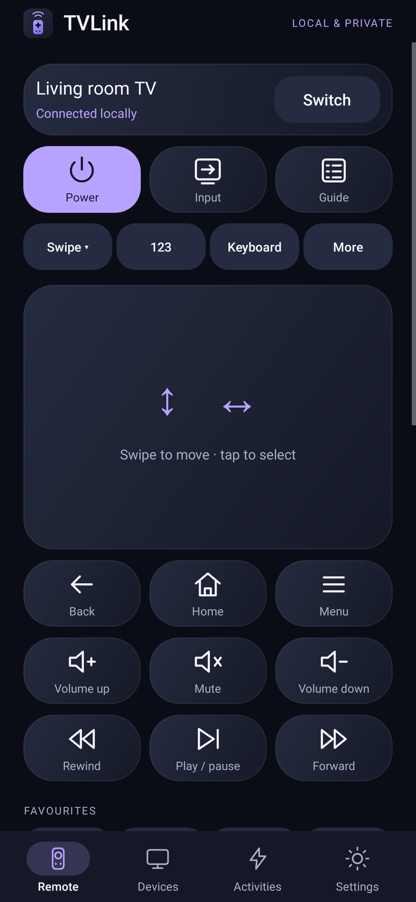
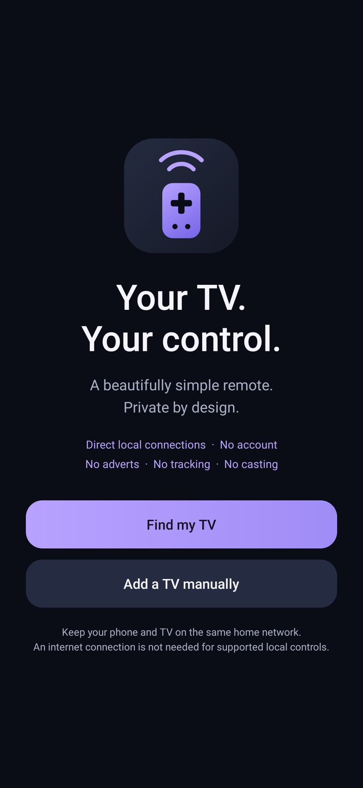

Your TV. Your control.
TVLink turns your phone into a calm, clear remote for the TVs in your home. It finds them on your Wi-Fi, pairs once, and then works like the remote that came in the box, with a proper direction pad, volume, playback, number keys and a keyboard for searching.
It talks straight to your TV over your own network. There is no account, no cloud service, no adverts and no tracking, and nothing you do in TVLink leaves your home.
Download for AndroidHow to install
- Version 1.2.1
- Android 10 or later
- 1.9 MB
Free, with nothing to unlock. No adverts, no account with the developer, no tracking. Compare or read the release notes.
Chrome may say the file might be harmful. It shows this for app files that do not come from Google Play. Choose Download anyway.

- No advertsNone in the app and none on this site.
- No accountOpen it, find your TV, pair, done.
- Stays at homeCommands go only to TVs on your own network.
- Every roomSave each TV with its own layout and favourites.
A look inside
These are the real screens, drawn by TVLink's own screen tests with made-up TVs. No TV was connected for these pictures. Swipe or scroll sideways to see them all.







How it works
Your phone and TV just need to be on the same home Wi-Fi.
Find your TV
Scan your home network, or type the TV's address. TVLink lists what it finds by name and make.
Pair once
Approve TVLink on the TV, or type the code the TV shows. TVLink remembers the pairing on your phone.
Use it like a remote
Direction pad, volume, playback, numbers, typing, favourites and activities, for every TV you save.
Everything is in, and all of it is free
Nothing below is held back for a paid tier, because there is no paid tier.
Works with your TV
- Wi-Fi control
- Samsung Tizen, LG webOS, Sony BRAVIA, Philips, Panasonic VIERA, and Android TV and Google TV sets from Sony, TCL, Hisense, Philips, Sharp, Toshiba and others.
- Infrared too
- On a phone with an IR blaster, 173 built-in code sets cover 15 TV makes, with no Wi-Fi needed.
- Fire TV
- Advanced control of compatible Fire OS sets and sticks, when you switch on network debugging on the TV yourself.
- Honest about support
- Every connection type is listed with what it can and cannot do. TVLink never pretends a button works when the TV does not offer it.
A remote you can make your own
- Four ways to steer
- A classic direction pad, a large pad, a compact remote and swipe mode.
- Eight skins
- Eight hand-made remote skins, your own accent colour, and light, dark or follow-the-phone appearance.
- Your buttons, your order
- Add, hide and reorder the extra controls, make the buttons bigger, and set them up for left-handed use.
- Per TV
- Every saved TV keeps its own layout, skin and favourites.
Quicker than the box remote
- Favourites
- One tap for a channel, an HDMI input or an app on the TV.
- Streaming buttons
- Optional buttons for the big streaming services. Where the TV can say which apps it has, TVLink shows only the ones that are there.
- Activities
- A sequence of buttons with pauses in between, such as power on, HDMI 2, volume down.
- Keyboard and numbers
- Type searches straight onto the TV where it allows, and a full number pad for channels.
Always to hand
- Widgets
- Home-screen widgets and a launcher shortcut for the buttons you use most.
- Notification remote
- Optional controls in your notifications while TVLink is connected.
- Sleep timer
- Your phone can send a power-off at a time you choose, where the TV supports it.
- Wake the TV
- Wake-on-LAN for TVs set up to accept it.
Private by design
- Nothing leaves your home
- TVLink sends commands only to private addresses on your own network. It makes no requests to the internet at all.
- Locked and encrypted
- An optional PIN or fingerprint lock, settings encrypted on your phone, and password-encrypted backups that leave out every pairing key.
Your living room stays your business
No account, no tracking
No sign-up, adverts, analytics or crash reporting. The developer receives nothing.
Home network only
TVLink talks only to TVs on private addresses on your Wi-Fi. It refuses internet addresses.
Encrypted on your phone
Saved TVs, pairings and settings are encrypted with a key kept in your phone's secure hardware.
Installing and updating
TVLink is not on Google Play, so your phone asks a couple of extra questions the first time.
Download the app file
Tap Download on your phone. The file is called TVLink.apk and is about 1.9 MB. If Chrome says the file might be harmful, choose Download anyway.
Allow the install
Open the file. The first time, Android asks you to allow your browser to install apps. Allow it, go back and tap Install. If Google Play Protect steps in, choose More details, then Install anyway.
Updating later
Open Settings, About TVLink and tap Check for updates. It opens the releases page in your browser; if a newer TVLink is out, download it and install it over this one. Your TVs, pairings and settings are kept.
Version 1.2.1, released 26 November 2026. See the release notes, or check your download.
Questions
Is TVLink really free?
Yes. There is no paid version, no subscription and no adverts, and nothing in the app is locked.
Is it on Google Play?
No. TVLink is a personal project and is downloaded from this site as an Android app file. It needs Android 10 or later.
Will it work with my TV?
TVLink works with most smart TVs from Samsung, LG, Sony, Philips and Panasonic, and with Android TV and Google TV sets, over your home Wi-Fi. Exactly which buttons work depends on the TV's model and software. If your phone has an IR blaster, infrared covers many older sets as well. Roku TVs are not supported over Wi-Fi.
Why does it ask to pair?
Smart TVs only take commands from apps you have approved. You do it once: accept TVLink on the TV, or type the code the TV shows. TVLink keeps that approval encrypted on your phone.
Does it need the internet?
No. TVLink only talks to TVs on your own Wi-Fi, and makes no requests to the internet. Your TV's own apps may still use the internet as normal.
Can it mirror my phone or cast videos?
No. TVLink is a remote control only. It has no casting, screen sharing or mirroring, which keeps it small and private.
Which phones have an IR blaster?
Some Xiaomi, Redmi, POCO, Honor and Huawei phones, among others. TVLink checks for one and only offers infrared when your phone has it.
What if I forget my TVLink PIN?
Clear TVLink's storage in Android's app settings to start again. Your saved TVs and layouts are removed, so keep an encrypted backup.
How do I get new versions?
Open Settings and tap Check for updates. It opens the releases page in your browser. Install the new file over the old one, without uninstalling first, and your TVs, pairings and settings are kept.
Who made it?
TVLink is made by Jonathan Jackson, an independent developer in the United Kingdom. It is not connected with any TV maker or streaming service, and their names and logos belong to their owners.
One remote for every room
Free, with no adverts and nothing to unlock. Made by the developer of several other free Android apps: see them all.